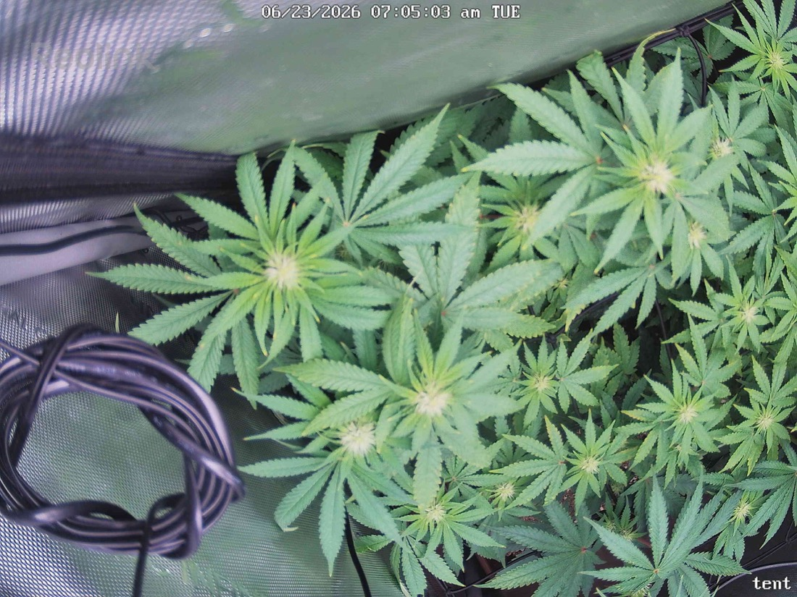

← All reports
Jun 23, 2026
Tue Jun 23, 2026 — 7:05 AM

Prognosis
Daily check — 6/23 vs 6/22 (Day 20 of 12/12 flower)
- Camera moved, not the plant. The frame shifted hard left/down — current shot shows the tent's left wall, coiled cable, and the canopy pushed to the right third of frame. This is reframing (you've been adjusting angle/fan placement), so a true side-by-side growth comparison isn't possible today. Treat this as a partial view.
- Growth/structure: What's visible is consistent with yesterday — flat, well-spaced colas, healthy serration, good internodal structure from the SCROG/LST. No new tacoing or cupping in the leaves I can see.
- Color: Deep, even green across the visible canopy. No interveinal chlorosis, no edge burn, no magnesium/cal fade. The fresh 6/20 top dress is clearly carrying it.
- Light stress: Can't see the back-left/back-right colas that were reading ~800 ppfd at tops, so I can't re-confirm the tip burn you flagged 6/22. Visible leaf tips in this frame look clean — no fresh bleaching or new burnt tips on what's shown.
- Pests: No webbing, stippling, or visible mites in this view. Consistent with your clean inspections since ~6/14. Stay on the Green Cleaner cadence through egg-hatch.
- Phase check: Right on track. ~3 weeks into 12/12, you should be in the stretch-tapering / early-flower-formation window, and the dense, even canopy with forming sites matches that. No stall.
Suggested next actions:
- Recenter the camera over the canopy before tomorrow's shot — current angle wastes half the frame on tent wall/cable and hides the exact colas (back-left/back-right) you're monitoring for light stress.
- Tuck that coiled cable out of the airflow/canopy path while you're in there.
- Otherwise no action needed — continue spray cadence and watch the ~800 ppfd tops for any new tip burn once the framing is fixed.
Overall: Healthy, on-schedule early-flower plant; today's only real issue is the camera reframing, not the grow — fix the angle so tomorrow's comparison is meaningful.